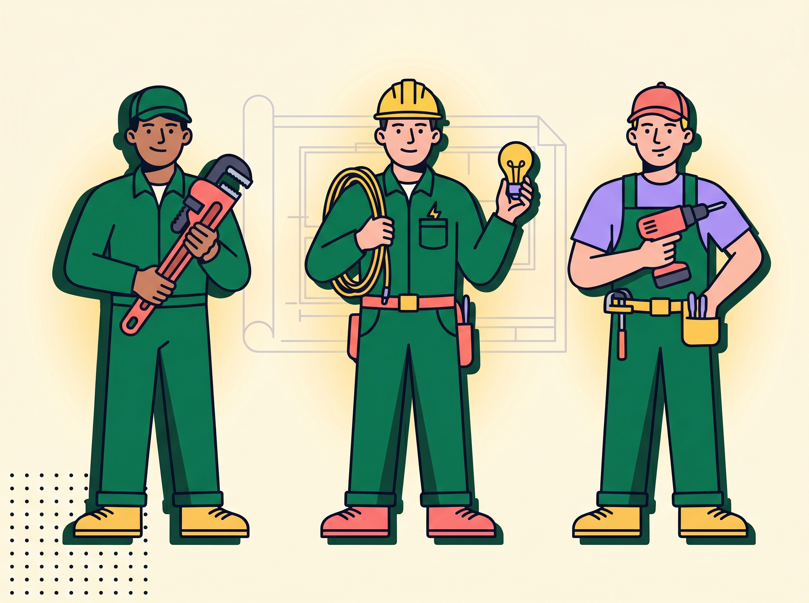
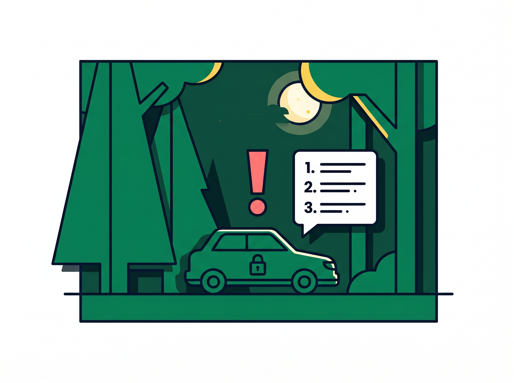
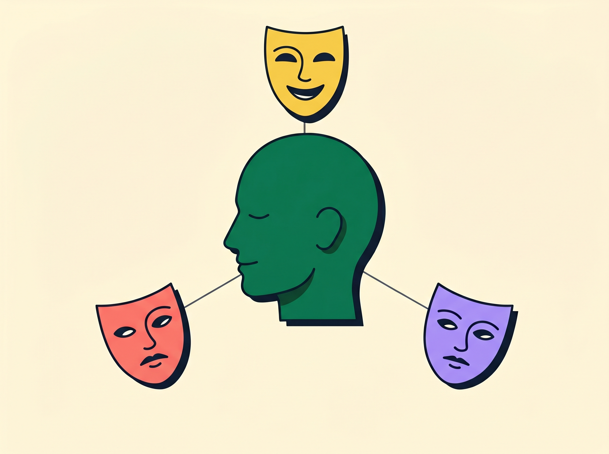
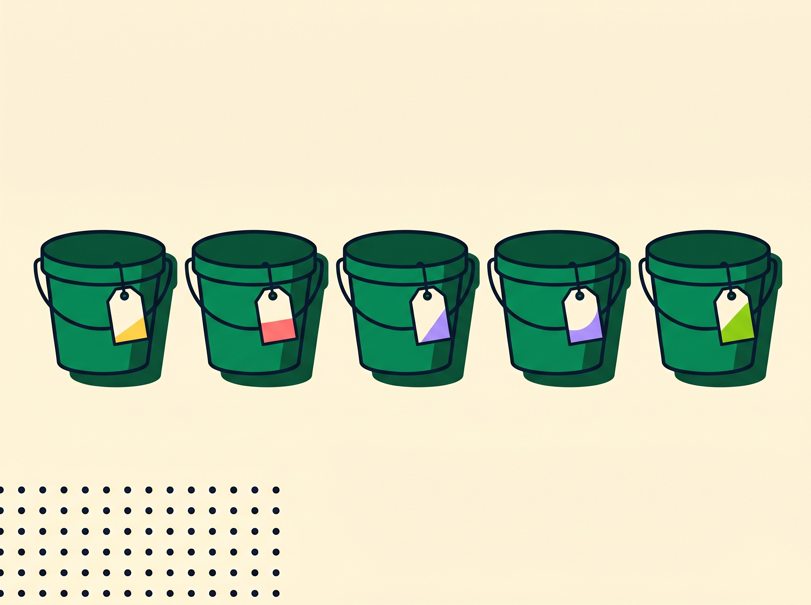
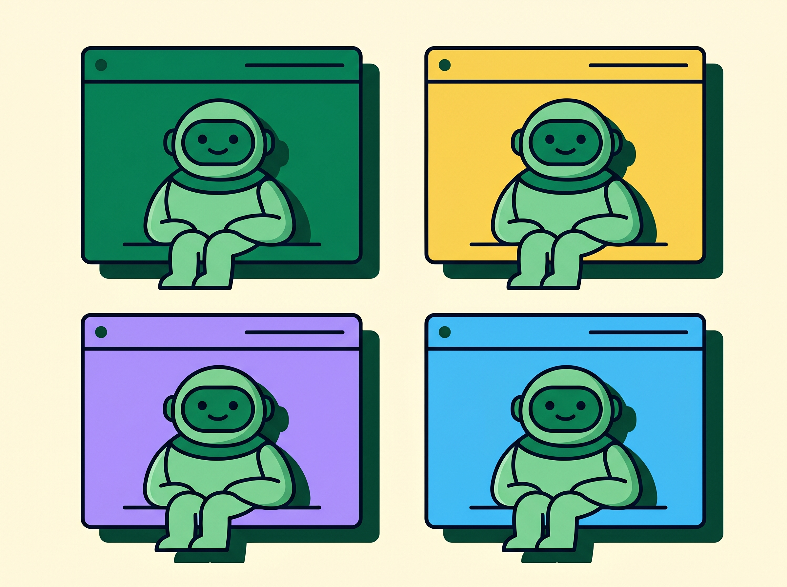
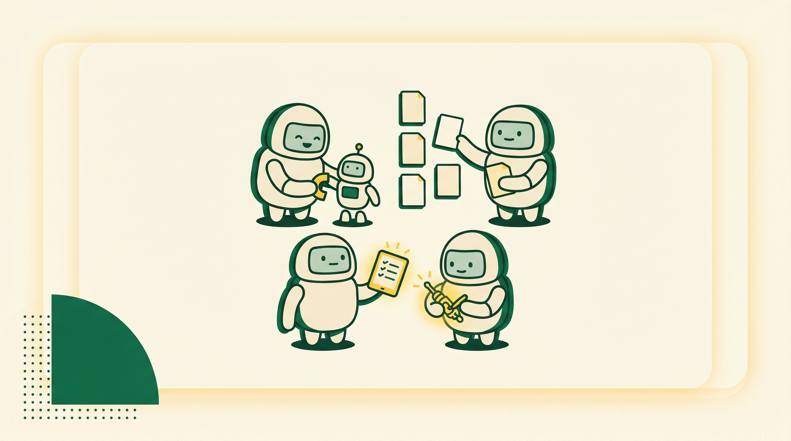

יש עבודה שלא מעבירים הלאה —
חושבים עליה יחד עם סוכן.
סקיל לוקח בקשה מוגדרת ומחזיר אותה מוכנה; סוכן הוא פרסונה עם דעה שמכירה את העולם שלכם — למשימות שאין להן בקשה מוגדרת.
חלק ראשון
הסיפור.
לפני ההגדרה — כמה סיפורים שמסבירים למה בכלל צריך סוכן.
לדעת לקדוח לא הופך מישהו לשיפוצניק.
- לדעת לבצע פעולה זה רובד אחד: אדם יכול לקדוח ולתלות מדף.
- להיות איש המקצוע זה רובד אחר: הידע והניסיון של איפה עוברים הצינורות ומה אסור לשבור.
- לא לכל בעל מקצוע יש כל יכולת, ולא כל מי שיש לו יכולת הוא בעל המקצוע.

מה יש לשף במסעדה שלי אין?
- כל אחד יכול להכין חביתה, ובכל זאת אנשים הולכים למסעדה בשביל משהו שמעבר לפעולת הבישול עצמה.
- מעבר ליכולת, השף נושא איתו ידע, מומחיות, שנים של ניסיון, מסורת מהבית והכשרה בחו"ל.
- כל העולם הזה הוא הסוכן: לא היכולת האטומית של קידוח, אלא פרסונה שפונים אליה להתייעצות וליווי.
אותה בקשה נדחית ישירות — ונפתחת כשעוטפים אותה בסיפור.
- בקשה יכולה להידחות כשהיא נשאלת באופן ישיר.
- אותה בקשה בדיוק, כשהיא ממוקמת בתוך סיפור ותפקיד, מקבלת מענה אחר.
רכב נעול, תינוק בוכה — ולפתע מתגלה סוף לחומה.
- כששואלים ישירות, התשובה היא לא.
- כשנותנים הקשר ותפקיד, מתברר שגם לחומה הזו יש מקום שבו היא נגמרת.

סיפור הוא הקשר, וההקשר אומר למודל איך להתנהג.
- AI מתחבר לסיפורים בדיוק כמו בני אדם, כי סיפור הוא הקשר שיש לו למה להתחבר אליו.
- תנו לו תפקיד, והוא יתנהג מתוכו: בתפקיד של מישהו עם המון ניסיון, הוא יתנהג כמו מישהו עם המון ניסיון.
הסיפור המרכזי
העובדת הכי חכמה בעולם — שאף פעם לא אמרו לה מה התפקיד שלה.
אינטליגנציה היא לא אותו דבר כמו להכיר את התפקיד שלך.
סוכן צריך לדעת מה הוא אמור לעשות — שזה התפקיד שלו — ולאילו כלים לגשת.
חלק שני
הפרסונה.
מה הופך תודעה אחת לפרסונה אחת, ומתי בכלל בוחרים בסוכן.
תודעה אחת שעוטה פנים שונות, בלי לטעון מחדש מי היא בכל פעם.
- אדם הוא אותו מוח בשיחה מספק, מהורה, מלקוח — ופרסונה שונה בכל אחת מהן.
- המעבר לתפקיד קורה מעצמו; אין טעינה מחדש בכל בוקר של מה זה אומר להיות העובד.
- סוכן עובד באותו אופן: הוא מוגדר פעם אחת, ונכנס לדמות.

סוכן מיועד לעולם של משימות, לא למשימה בודדת.
- סקיל מבצע משימה אחת; סוכן מיועד למקרים שדורשים התייעצות, תהליך וליווי לאורך זמן.
- זו לא משימה אחת שאתם מבצעים — זה עולם שלם של משימות, המוחזק יחד על ידי תפקיד מוגדר אחד.
- אז למה לא סקיל עם references? סקיל מבצע ומסיים; סוכן זוכר, מלווה, ומנהל איתכם דו-שיח לאורך זמן.
חלק שלישי
משאלות ל-SPOKE.
לפני המבנה — מה בכלל הייתם רוצים לדעת על מי שאתם מגייסים.
מה הייתם רוצים לדעת על האנשים שאתם מביאים איתכם?
דמיינו שאתם מגייסים אנשים שיעזרו לכם — מה הייתם רוצים לדעת על כל אחד מהם?

SPOKE™ — מבנה הסוכן
חמישה רכיבים שיוצרים פרסונה עם עולם.
מי הוא, התפקיד שלו ואיך הוא חושב.
איך הוא עובד — מה הוא תמיד עושה ומה לעולם לא.
מה הוא מחזיר, ובאיזו צורה.
מה הוא יודע על העולם שלכם.
איך הוא עובד, שלב אחר שלב.
חלק רביעי
הכירו את סוכן השף.
בואו נבנה סוכן שף.
ראינו את חמש האותיות של SPOKE; עכשיו נבנה יחד את סוכן השף.
חלק חמישי
איפה זה חי — ורגע ה-wow.
איפה הסוכן יושב בפועל, ולמה הוא חוזר על עצמו באותה איכות.
בכל מקום שאפשר לנהל בו צ'אט, אפשר לשים סוכן.
- הבית ברירת המחדל הוא Claude Project: שם הסוכן ככותרת, וקובץ ה-MD מועלה כקובץ Knowledge.
- אותו רעיון נודד: Project ב-Claude, תיקיות ב-ChatGPT, מחברת ב-Gemini, או NotebookLM.
- ללא system prompt קבוע, ההנחיות והקבצים פשוט נזרקים בתחילת הצ'אט.

איזה סוכן הכי קרוב למשהו שאתם באמת עושים?
שף
תפריט ממה שיש במקרר או לאירוע, עם רשימת קניות.
מלווה
הולך איתכם בספר או בתהליך, ודוחף לשלב הבא.
יועץ החלטות
שוקל דילמה איתכם ונותן דעה מנומקת, בלי להחליט במקומכם.
מסדר משימות
הופך ערימה מבולגנת לרשימה ברורה ושואל מה דחוף.
חבר ביקורת
חוות דעת שנייה כנה על טיוטה או רעיון חצי-אפוי.
מתכנן
ממטרה מעורפלת לתוכנית שלב-אחר-שלב.
מריצים את סוכן השף ב-Project על קלט אמיתי.
ואז מריצים את אותו קלט פעם שנייה — ורואים מה חוזר.
סוכן אחד זו רק ההתחלה.

Benefits
AI that finally fits · בן עקיבא